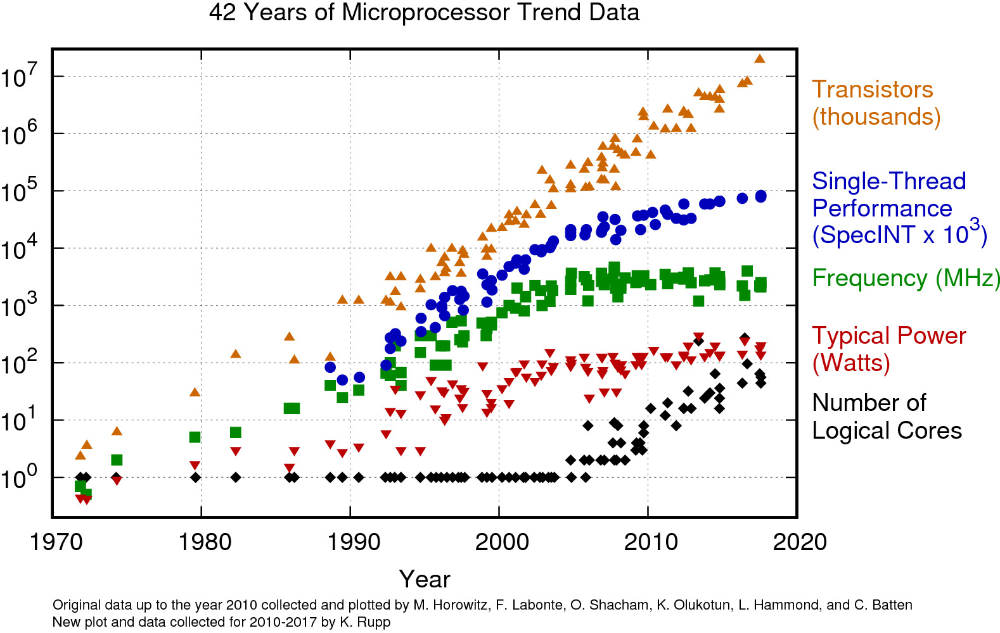

Taskflow - A Task Graph Library
How to make a computer compute
The walls

https://www.karlrupp.net/2018/02/42-years-of-microprocessor-trend-data/
Ways of writing multi-threaded programs
Manual threads
Data parallel
Producer / consumer
Pipeline
Task graph
Actors / events
Fork-join
Task Graph Computing System
Instead of chaining function calls together as the program is executed the structure of the computation is defined up-front in a task graph.
Task Based Parallelism
Construct a dependency graph with tasks as nodes.
Dependencies between tasks represented as edges.
Execute tasks top-to-bottom.
Exploit task independence for parallelism.
Example Task Graph

Once Task 1 has completed we can run Task 2 and 4 in parallel.